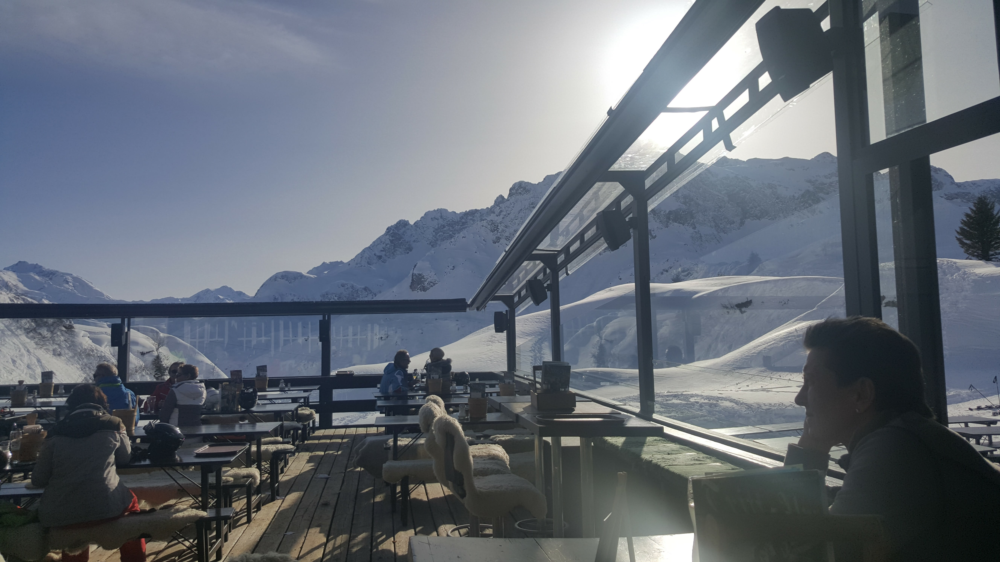
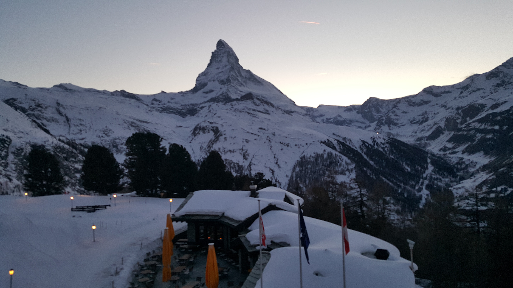
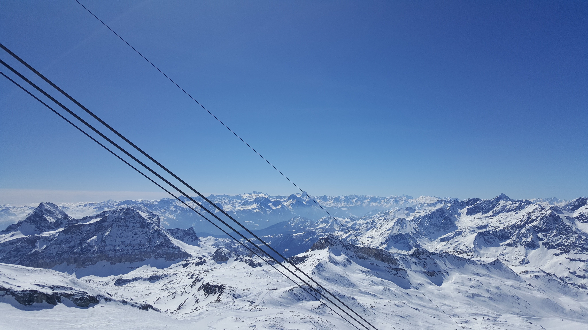
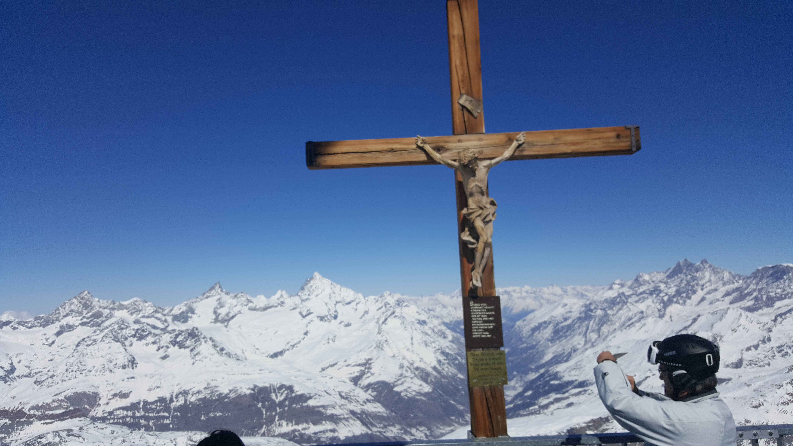
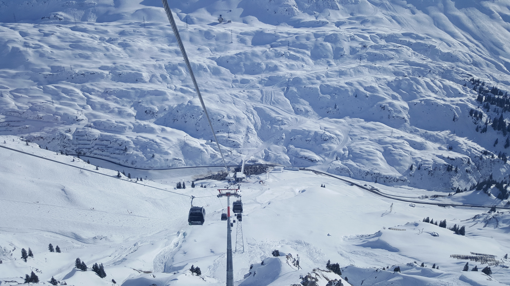
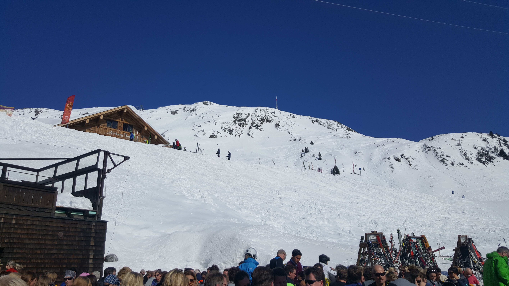
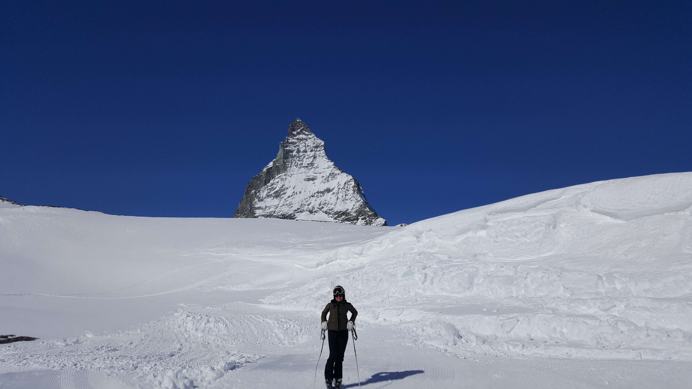
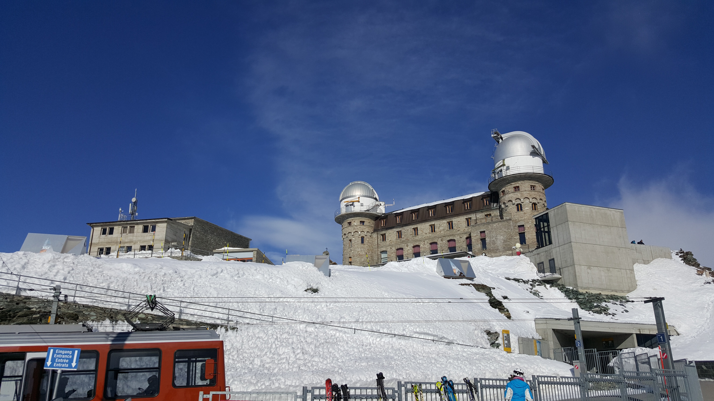

Why Should I ski In the Alps?
BECAUSE ITS AMAZING!!!
There are many places a person can travel to for what will feel like a once in a lifetime ski trip. The Alps are not much more expensive or difficult to get to, from the US East Coast, than ski resorts in Rocky Mountains. Lift tickets are a lot less expensive for resorts in France, Italy, Switzerland, Austria, and Germany than they are for ski destinations in the United States. Height, the alps are higher with a lot more above the treeline skiing which delivers the top of the world, above it all feeling. While delicious food can be found most places where one can ski, amazing food is standard in Europe, one need not be in a city to find world class cuisine. A wonderful plate of pasta or charcutire or fondue is almost universal. Culture, while there is absolutely nothing wrong with what the US or Canada has to offer, it is amazing to see and learn about other cultures which is what you see when traveling abroad.

Sunset bar in Zurs, Austria.
Where Should I Ski The Alps
LOTS OF PLACES!!!
The Alps are 750mi long mountain range spanning 8 countries. Austria, France, Germany, Italy, and Switzerland are all popular destinations. All of the countries that share the alps feature world class skiing in fact all of the above listed counties have hosted a Winter Olypiad. Within the alps there are regions that span often span national boarders; the Mont Blanc area spans Switzerland, and the Matterhorn features slopes and hotels in both Italy and Switzerland.

Matterhorn at dusk. Zermatt, Switzerland
How Should I Plan A Trip?
WITH LESS EFFORT THAN YOU MAY THINK!!!
Start with the basics. Focus on experience and area. Consider what type of skiing would most enjoy. Options enclude long touring trails, steep and fast chutes, off piste exploring, and many others.
Different resort areas have different vibes. Chamonix, France is practicaly a city with something always going in addition to the gorgeous slopes that surround it. Zermatt is a quiet and quaint small town with no gasoline vehicles giving the town amazing mountain air and breath taking distortion free skyscapes. The Arlberg Region in Austria is a collection of small towns on different mountains, some are known for world class nightlife and others for a peaceful and restful vibe.
Long story short there is something for everyone. Research on line or check a travel you will find an area that caters to your tastes. There are generally hotels and restaurants at most price points. With miminum homework you will find the right place for your once in a lifetime trip!

View South from the Gondola Station at the peak. Cervinia, Italy.
What Else Should I Know?
BE PREPARED!!!
Insurance and know your limits. Make sure to follow safety adviseries, the temptation to find fresh powder off of the marked trails maybe strong but it can also be deadly. Follow recommendations for guides and take suggested safety gear. Safety equipment such as a shovel, a pack, an avalanche probe, and emergency beacon are easy to rent. Most lift tickets offer some form of safety insurance, most hotels are also knowledgable about how to arrange it. The saftey insurance for mountain evacation is typically very inexpensive but the cost of a helicopter ride or other transport of the mountain is incredibly expensive.

Memorial for those lost on the mountain. Zermatt, Switzerland.

View from the gondola in Zurs, Austria.

Lunch on the peak at Lech, Austria.

Skier in front of the Matterhorn, Switzerland.

Observatory on top of Rifflehorn, Switzerland.